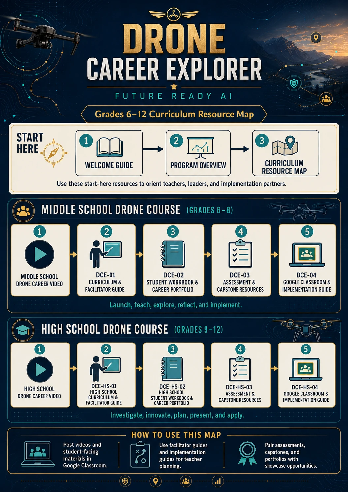
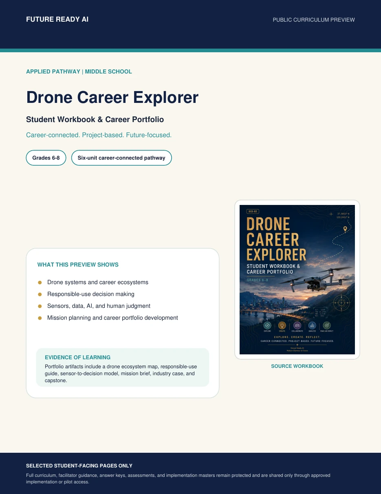
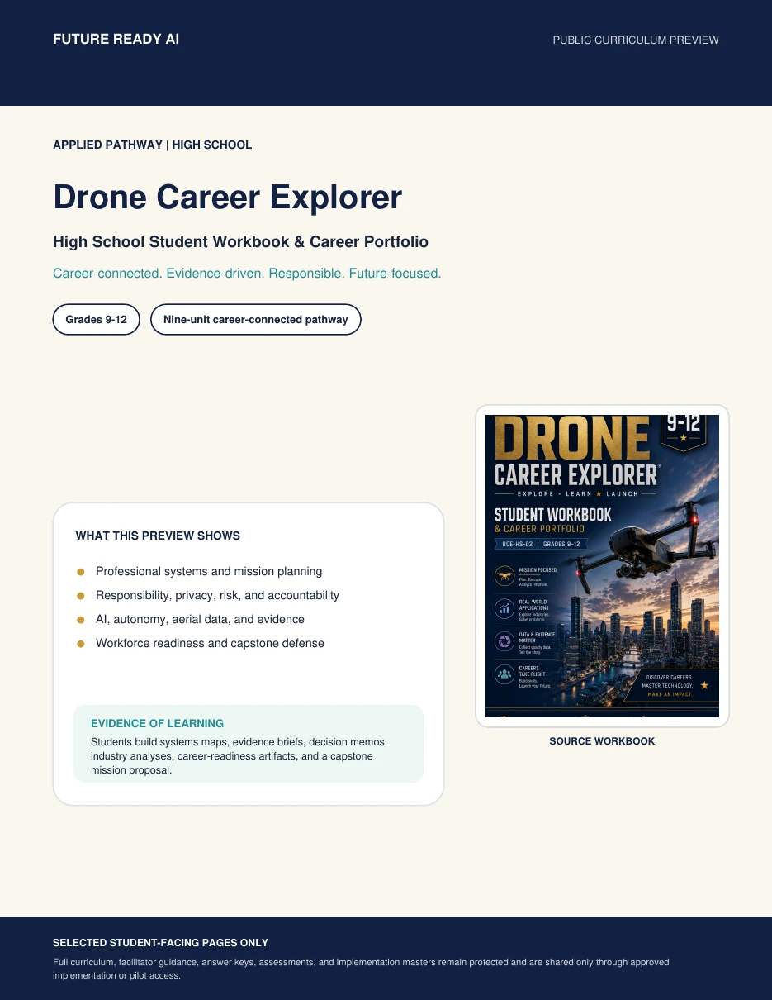

01 • Orientation
Welcome & Start Here Guide
Program purpose, pathway orientation, implementation positioning, and how the curriculum environment is organized.
Open Guide →Review the program architecture, open student-facing previews, watch the grade-band introductions, and compare the resources available to schools and partners.



These public resources establish purpose, progression, curriculum structure, and the student experience.
Program purpose, pathway orientation, implementation positioning, and how the curriculum environment is organized.
Open Guide →Middle school and high school progression, learning dimensions, core themes, outcomes, portfolio, and capstone structure.
Open Overview →See how intro video, facilitator guide, workbook, assessment, implementation, and professional resources connect.
These PDFs show selected source pages from the actual student workbooks and demonstrate the depth of the learning experience.
Systems thinking, responsible-use decision making, sensors/data, mission planning, career exploration, and final portfolio evidence.
Mission analysis, responsibility, AI/autonomy, aerial evidence, workforce readiness, career portfolio, and capstone defense.
Review curriculum-framework connections, pathway certificate requirements, and the Drone Career Explorer Educator Microcredential.
The Careers & Industry page connects student learning to career clusters, current industry signals, FAA certification information, and verified examples of postsecondary UAS programs.
These are examples of current industry and education tools—not endorsements or formal partnerships. Schools should review licensing, privacy, hardware, and procurement requirements before implementation.
Simulation and learning-management features designed for classroom, workforce-development, and operator-training environments.
Explore Zephyr ↗GIS and photogrammetry tools that connect aerial imagery to 2D/3D mapping and geospatial analysis. Esri offers K–12 school software options.
Explore Esri for Schools ↗Reality-capture workflows spanning field maps, mission planning, remote sensing, documentation, and industry-specific training.
Explore DroneDeploy.org ↗Photogrammetry and 3D-mapping tools with student, professor, and classroom education licensing and course materials.
Explore PIX4D Education ↗Photogrammetric processing and 3D spatial-data software with educational licensing for accredited institutions.
Review Agisoft Licensing ↗Open-source drone-image processing workflows that can produce orthophotos, point clouds, textured models, and elevation products.
Open Documentation ↗These external programs can extend career exploration, aviation awareness, and postsecondary planning. They are listed as public resources and do not imply affiliation with Drone Career Explorer.
FAA educator resources include a six-lesson aviation series with a dedicated drone lesson and career connections.
FAA educator program ↗Designed to connect youth drone programs with safety information, best practices, industry, government, and workforce-pathway conversations.
FAA Youth Drone Initiative ↗Recognizes colleges and technical schools preparing students for UAS careers and connects postsecondary programs with workforce needs.
FAA UAS-CTI ↗Aviation and airspace learning resources covering careers, weather, safety, air traffic control, drones, and educator activities.
NASA Smart Skies ↗